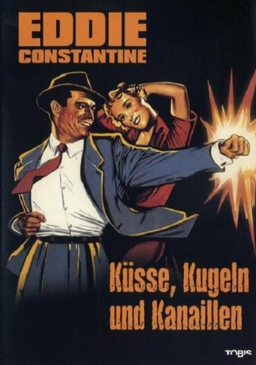

#6535 Küsse, Kugeln und Kanaillen
 
 IMDB-Wertung: 6.3 / 10
IMDB-Wertung: 6.3 / 10  Metascore: 0
Metascore: 0 
Michel was just released from prison when he is suspected of having killed his wife as she was the one who brought him into prison. She also betrayed him with Rupert, a journalist not wanting to become a part of the newspaper stories. Thus Rupert asks the reporter Barney to find proof for Michel's inocence. But the police already sees Michel back in prison...
Jahr: 1955
Dauer: 87 Minuten
FSK: 12
Land: Frankreich Studio: Constantin FilmTonspuren:
Untertitel:
Auflösung: SD (640x480) Größe: 693 MB
Genre: Thriller, Krimi
Regisseur: John Berry
Drehbuch: John Berry
Soundtrack:
Darsteller:
 Eddie Constantine als Barney Morgan
Eddie Constantine als Barney Morgan- Bella Darvi als Marianne Colas
- Walter Chiari als Dédé la Couleuvre
- Aimé Clariond als M. de Villeterre
 Paul Frankeur als Jacques Rupert
Paul Frankeur als Jacques Rupert- Olivier Hussenot als Michel Gérard
- Robert Lombard als Olivier de Villeterre
- André Versini als Armand Sylvestre, le comédien
- Albert Rémy als Ledoux
- Umberto Spadaro als L'opéré
- Cosetta Greco als Alice Gérard
- Albert Dinan als Henri
- René Hell als René les binocles
- Harry-Max als Le typo
- Sylvain als Le valet
- Antoinette Moya als
- Max Amyl als Un journaliste , uncredited
- Jack Ary als Le barman , uncredited
- Paul Azaïs als Un inspecteur , uncredited
- Charles Bouillaud als Un gendarme , uncredited
- Alain Bouvette als L'inspecteur au théâtre , uncredited
- Raymond Brun als (uncredited
- Jean Clarieux als Le nouveau locataire , uncredited
- Jean Degrave als Un avocat , uncredited
- Max Dejean als Un gardien , uncredited
- Jean Duval als (uncredited
 Yvonne Gradelet als Une opératrice , uncredited
Yvonne Gradelet als Une opératrice , uncredited- Franck Maurice als Un accusé , uncredited
- Nina Myral als (uncredited
- Jackie Sardou als La concierge , uncredited
- André Wasley als Le directeur de la Santé , uncredited
- René Worms als Un voyageur , uncredited
Datei: X:\Person\Eddie Constantine\Küsse, Kugeln und Kanaillen (1955, FSK12, 640x480).avi seit 05.07.2017
Festplatte: HD Collection-7+mehr(A-Z)+Person
 Es gibt insgesamt 10 Filme in der Gruppe 'Person\Eddie Constantine'
Es gibt insgesamt 10 Filme in der Gruppe 'Person\Eddie Constantine'